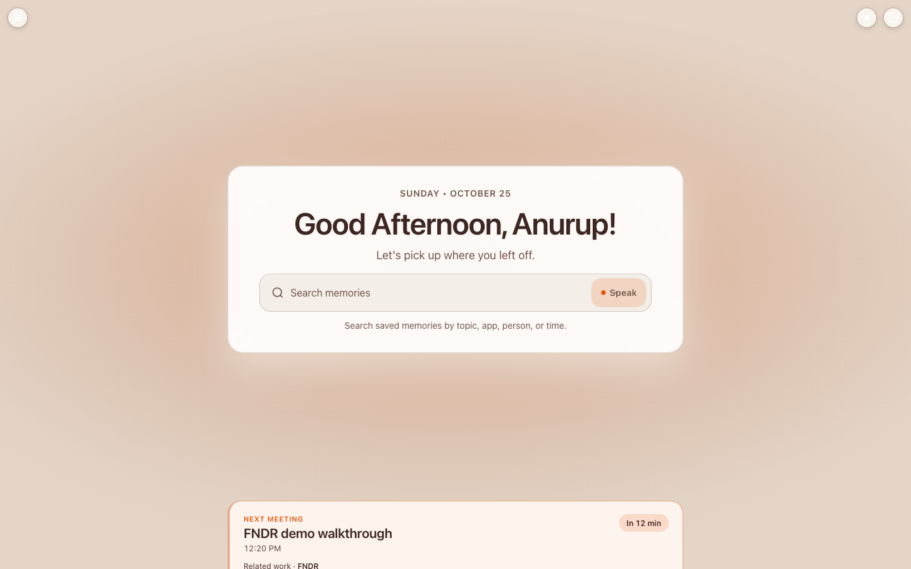
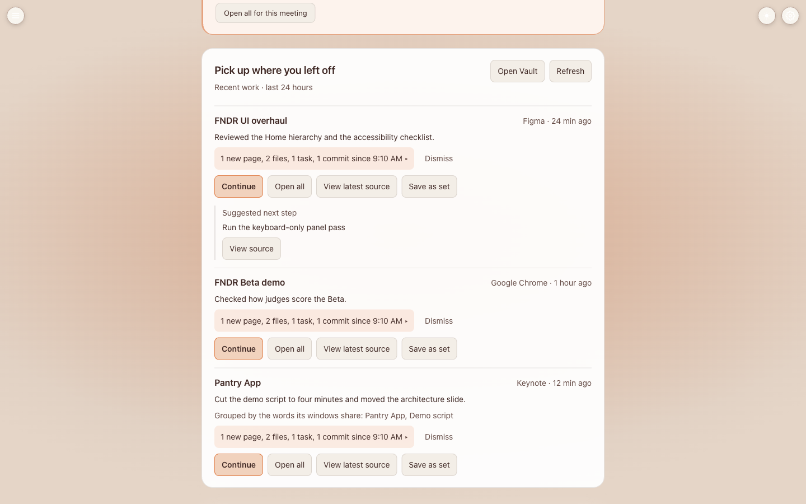

See it work.
A closer look at FNDR, from search to action.
A look inside FNDR
Interface previews from the midpoint presentation.


A closer look at FNDR, from search to action.
Interface previews from the midpoint presentation.

